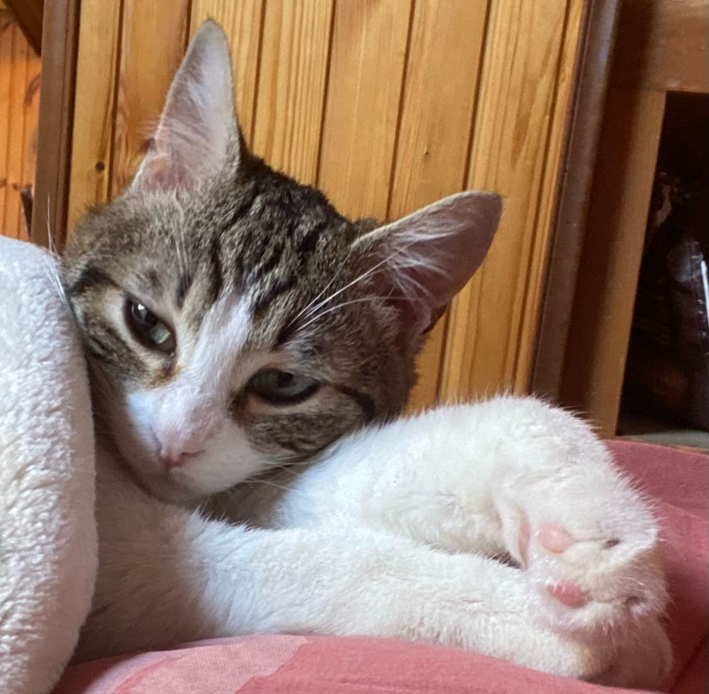

I NOSTRI SERVIZI PER IL PUBBLICO:
Ecco una lista dei servizi offerti a tutti coloro che stanno visitando per la prima volta il nostro sito.
In fondo troverete tutti i nostri contatti.
Mettiamo a vostra disposizione vari servizi per iniziare la vostra nuova vita con un amico a 4 zampe accanto; vi sosterremo in tutto il cammino dalla ricerca alla sua cura.
Eccovi quindi una lista dei servizi da noi offerti. In fondo potrete trovare i nostri contatti e social, non esitate a contattarci per qualunque dubbio o necessità.
In questo spazio troverete tutti gli animali adottabili in base alla vostra zona e alle vostre disponibilità.
Un indice digitale, comodo, pratico e dettagliato di tutti gli animali che si possono adottare degli shelter con cui collaboriamo; viene costantemente aggiornato e offre la possibilità di una ricerca rispetto a zona, sesso e taglia del animale per permetterti di cercare l’animale perfetto per te.

È il tuo primo animale domestico? Allora consultate questo spazio dove troverete alcune informazioni veterinarie che offriamo per la cura sanitaria dei vostri amici animali.
E’ il tuo primo animale domestico? Per prenderti cura di lui al meglio inizia ad informarti consultando la nostra pagina con alcune basilari informazioni veterinarie. L’amore che gli darai non basterà a proteggerlo dalle malattie, poni molta attenzione sulla salute fisica e mentale del tuo nuovo amico.
Questo è uno spazio dedicato nello specifico all'addestramento dei cani. Consigli e informazioni per addestrare al meglio i vostri amici a quattro zampe.
E’ sempre molto importante, se si adotta un cane, intraprendere un percorso di educazione per poter vivere entrambi una vita serena e felice. Questi percorsi sono da seguire con l’aiuto di un educatore cinofilo professionista, ma puoi già iniziare ad informarti sull’argomento consultando il nostro spazio dedicato ai consigli cinofili.
Andate a seguirci nelle nostre pagine social:


I NOSTRI SERVIZI PER GLI SHELTERS:
Ecco una lista dei servizi offerti agli shelters che decidono di collaborare con noi. Contattateci se avete bisogno di più informazioni
Alla base del nostro progetto si trova la collaborazione tra shelter e volontari che tramite noi migliorano la loro capacità di raggiungere le persone per adozioni e donazioni. Se sei interessato a collaborare con noi o a usufruire dei nostri servizi dai un occhiata a ciò che offriamo e contattaci (i contatti sono elencati alla fine, seguici anche sui social!).
BOOK
Offriamo uno spazio apposito nel nostro sito per contenere un database dei vostri animali adottabili con una descrizione, in questo modo potremmo agevolare i clienti nella scelta del loro animale dei sogni in maniera efficace.
Un indice digitale, comodo, pratico e dettagliato di tutti gli animali che si possono adottare degli shelter con cui collaboriamo; viene costantemente aggiornato e offre la possibilità di una ricerca rispetto a zona, sesso e taglia del animale per permetterti di cercare l’animale perfetto per te.

PROFILI SOCIAL
È il tuo primo animale domestico? Allora consultate questo spazio dove troverete alcune informazioni veterinarie che offriamo per la cura sanitaria dei vostri amici animali.
E’ il tuo primo animale domestico? Per prenderti cura di lui al meglio inizia ad informarti consultando la nostra pagina con alcune basilari informazioni veterinarie. L’amore che gli darai non basterà a proteggerlo dalle malattie, poni molta attenzione sulla salute fisica e mentale del tuo nuovo amico.